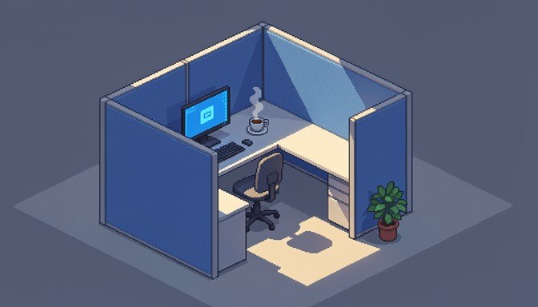
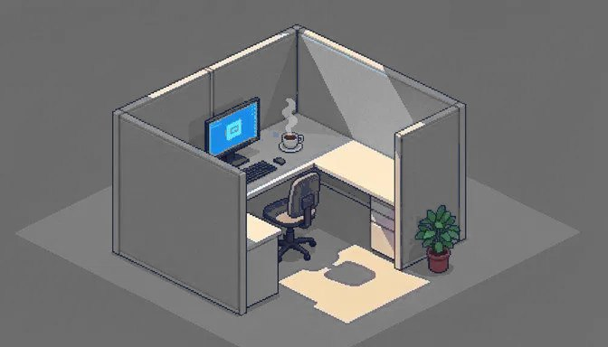
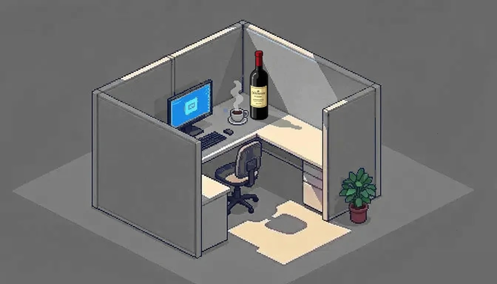
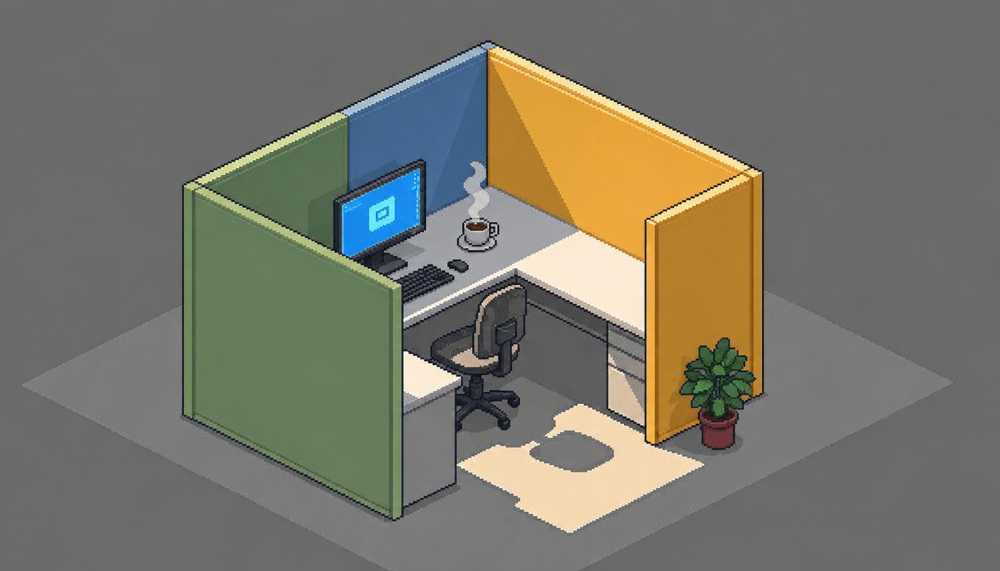
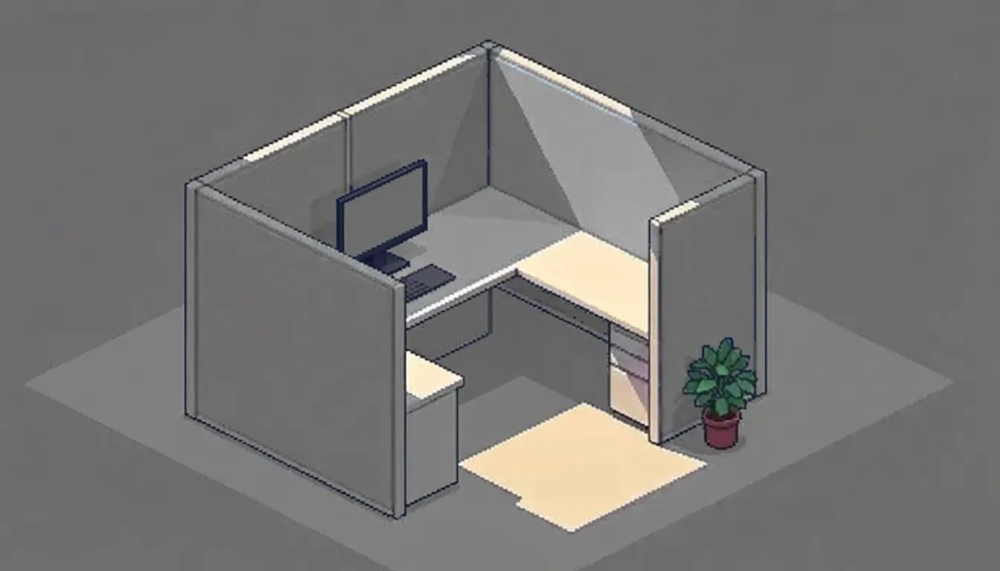

Недавно я был на отраслевой конференции, где встретил пару знакомых, с которыми начинал ещё в питерских студиях. В отличие от меня, который всегда работал на «дядю», они в какой-то момент выбрали тернистый путь создания инди, своих студий, и (судя по тому, как они заказывали напитки) этот путь оказался значительно тернистее, чем выглядел десять лет назад. Хотя глаза у них горели ровно так же, как тогда. Что тогда, что сейчас эти горящие глаза одновременно вызывали и зависть, и лёгкое подозрение, что они просто не успели ещё по-настоящему устать.
Потом мы разговорились. Пусть будет Костя, с которым мы когда-то делали «симсов», уже год пилит гачу для очередных китайцев, чтобы платить зарплаты своим ребятам. А пусть будет Лёша — держит студию из четырёх человек и занимается код-ревью аишных коммитов, но теперь уже для индийских ребят, только тех, которые в солнечной Калифорнии, а не в прекрасном Дели. Тут я вспоминаю своё четвертьвековое легаси, и когда мне говорят, что искусственный интеллект скоро заменит программистов, тихо радуюсь: после стольких лет разработки большинство систем там устроено настолько коряво, что любая нейросеть сжирает все токены, просто пытаясь осмыслить, куда она попала. А значит, как минимум до конца поддержки игры у меня будут задачи.
Про запиливание гач и работу на китайцев инди-студии не очень любят рассказывать вслух, потому как ломается стереотип «свободных и независимых», особенно на отраслевых мероприятиях, где все ходят с одинаковыми бейджами и одинаково уверенными лицами. В целом попасть в инди относительно несложно, а вот прожить в нём дольше, чем длится цикл разработки одного среднего проекта, оказывается задачей со звёздочкой.
Про серые обои
Исторически в разработке игр сложилось разделение труда: на тех, кто делает то, что хочется; на тех, кто делает то, за что платят; и на тех, кто делает вид, что одно как-то связано с другим. Перспективы миграции, если ты уже завяз в одной из категорий, выглядят так себе, и те, кто работает в Ларианах и Реймедях этого мира, редко задумываются, зачем человек с двумя профильными дипломами третий год подряд верстает анимации появления монеток.
Большая часть авторских проектов, ради которых мы вообще когда-то впервые открыли Unity или Unreal или начали писать свой движок, живут на чистом энтузиазме, тонком слое издательских денег и молитве, причём молитва обычно работает чуть лучше остального. Зарплат там либо нет, либо они выплачиваются опционами, которые имеют шансы превратиться в реальные деньги примерно с той же вероятностью, с какой Беседка наконец починит свой движок.
Сервисные проекты с микротранзакциями и постоянным онлайном живут наоборот, в режиме непрерывного дождя из бабок, но в эту сторону я смотрю с растущей тоской, потому что после анонса очередного сезонного пропуска за пять тысяч рублей в очередной гриндовой игре с открытым миром я начинаю всерьёз сомневаться, что мы вообще ещё делаем игры, а не казино с приятной графикой.
Большие сингловые проекты находятся где-то посередине. Иногда получаются прямо неплохими, иногда выходит продукт или очередной ремейк ремейка переиздания. В две тысячи двадцать шестом году я уже даже не понимаю, чему удивляться, когда индустрия торжественно анонсирует ремастер игры две тысячи двадцать первого, в которой главным нововведением был ремастер игры две тысячи четырнадцатого.
Недавний трейлер очередного открытого мира с молчаливым бородатым протагонистом, который собирает крафтовые ресурсы и лезет на башню, чтобы открыть кусок карты, напомнил мне, что этой формуле пошёл уже шестнадцатый год одного и того же геймдизайнерского дня сурка, только текстурки всё больше разрешением.
Оговорюсь, что я смотрю на отрасль со своего стула, и стул этот стоит в большой компании. В нише независимых разработчиков на Steam Deck и Game Pass картина наверняка получше, и там у людей появились новые площадки и новый воздух. Но я про то, что вижу сам.

Про выбор
Большинство людей, которые пришли в ремесло на волне любви к каким-нибудь Систем Шокам, Балдурс Гейтам и Хилым Сайлентам, через пару лет с удивлением обнаруживают, что любовь к этим играм не очень охотно конвертируется в зарплату, а инвесторы, которые щедро вкладываются в очередной клон Бравого Старца, при словах «иммерсив сим» пугаются, начинают прятать чековую книжку и пытаться свалить в более денежное место.
В итоге студии с по-настоящему интересными идеями держатся ровно столько, сколько у их основателей хватает терпения, кредитных денег, квартир и крепости отношений с супругой. Как только один из этих ресурсов заканчивается, мы получаем ещё один пост в соцсетях с фотографией пустого офиса и душевным письмом про благодарность команде.
Я смотрю на такие посты, потом смотрю на дату публикации и мысленно прикидываю, кто из моих знакомых сейчас обновляет резюме и кого можно будет затащить на багофикс в своё уютное легаси-болото, что говорит либо о моей наблюдательности, либо о масштабе проблемы, либо о том, что у меня слишком много знакомых из закрывшихся студий.
После закрытия очередной любимой студии вчерашние её сотрудники обнаруживают, что предложений о работе на рынке вообще-то немало. Просто все эти предложения почему-то ведут в несколько компаний, которые делают одинаковые игры с разными иконками. И платят там, кстати, очень даже прилично, что заметно осложняет внутренний моральный выбор.
Особенно тонкая ирония заключается в том, что сейчас классический мобильный сегмент после почти двадцати лет бешеных енотов выживает с переменным успехом, и все эти большие игроки потихоньку начали диверсифицироваться в смежные жанры разной степени «социальной ответственности», и теперь практически у каждого крупного издателя где-то на третьем уровне дочерних структур обнаруживается студия, которую аккуратно называют «адалт-направлением» или просто «дочерней структурой», а в баре — ну, чуть менее вежливо, начиная на букву «п»…
И вот несколько моих бывших коллег из условно приличного мобильного направления про строительство то ли города, то ли выращивания рыбок пишут, что переходят в новый проект в «дочернюю структуру» компании… Вряд ли я могу их осуждать, просто человеку надо иметь возможность платить за съёмную квартиру, ноготочки жены и новый ноут для себя любимого.
И вот мы все коллективно оказываемся в одной большой комнате с серыми обоями, где кто-то делает шедевр, перебиваясь дошиком, кто-то клепает донатные механики и тихо ненавидит своё утро, а кто-то умудряется совмещать оба занятия, как правило, не очень успешно, и при этом мы все искренне делаем вид, что у нас всё в порядке.

Про мечты
На тех же конференциях после второго бокала разговоры обязательно сворачивают в сторону «вот закончу этот контракт и тогда уже сяду за свой проект», и мы все согласно киваем, потому что у нас у самих на диске лежит тот самый файлик с описанием игры-мечты, который не открывался с восемнадцатого года, но дата изменения у него почему-то всегда свежая, потому что мы регулярно ползаем туда добавить ещё одну строчку и закрыть, ничего не написав.
После третьего бокала вина и стопки чего-то там Лёша наконец говорит вслух то, ради чего, кажется, и пришёл на эту конференцию: что уже шесть лет ловит себя на тяжёлом ощущении, что профессионально занимается оптимизацией продажи скинов в проекте, который сам бы не стал устанавливать даже под угрозой потери всех конечностей.
А дома, в выходные, по ночам пилит свой маленький проект про исследование заброшенных станций метро, в котором нет ни лутбоксов, ни ежедневных бонусов, ни баттлпасса, ни кооперативного режима с тиммейтами из Бразилии, но, к сожалению, нет там и инвестора, который бы потянул год полноценной разработки.
Это было, пожалуй, одним из отрезвляющих разговоров за последние пару лет, потому что я услышал, что человек перестал считать себя разработчиком игр и теперь просто пишет код за зарплату, потому что за горящие глаза платили всё меньше и меньше, так что глаза в какой-то момент перестали гореть, а зарплата осталась. И чтобы хоть как-то финансировать свой собственный авторский проект, он параллельно занимается подрядными работами для не самых вдохновляющих заказчиков, и я даже не буду уточнять, для каких именно. И каждый раз обещает себе, что вот этот заказ будет последним, и каждый раз с удивлением подписывает следующий, потому что авторский проект упорно не желает становиться самоокупаемым, а великие инди-герои из документалок все немножко врали.
Костя в этот момент допивал третий бокал, и мы все на пару минут забыли, что у него гача, ребята и аренда офиса. Хотя нет, Костя точно не забыл — в этот момент он как раз отписывался по новой фиче.

Про команду
Глобально это, конечно, ничем не отличается от ситуации, в которой я сам же оказался несколько лет назад в большой студии с серыми обоями, просто теперь я сам выбираю, чем именно мне отравлять свою профессиональную совесть, что по идее должно бы добавлять достоинства, но почему-то добавляет только морщин.
За это время я собрал команду из нескольких толковых ребят, которые на собеседовании честно сказали, что пришли в основном за стабильной зарплатой и обещанием, что мы хотя бы половину рабочего времени будем заниматься чем-то осмысленным. И я их искренне понимаю, потому что я и сам бы себя нанял именно на таких условиях.
Это, наверное, главное, что я понял за свою карьеру в индустрии, и оно звучит немного грустно, но честно: профессия геймдев-разработчика в две тысячи двадцать шестом году — это в большой степени искусство договариваться с самим собой о том, что вот эти конкретные сорок часов в неделю мы потерпим ради вот тех конкретных десяти, в которые мы делаем что-то, что не стыдно будет показать дитёнку.
И вы знаете, я в какой-то момент перестал ставить себе это в вину, потому что когда я смотрю по сторонам, я не вижу ни одного человека в нашем сегменте, у которого этот баланс выстроен идеально. Это касается даже тех самых героев из подкастов и интервью, которые рассказывают про чистое искусство и про следование мечте, но у которых каждый второй инвестор пришёл из фонда с не самой этичной финансовой историей.
Мы все находимся в одной и той же лодке разной степени дырявости, и единственная содержательная разница между нами заключается в том, кто из нас и с какой именно интонацией ноет при этом в твиттере или в постах на Хабре, и я искренне предпочитаю компанию тех, кто хотя бы честно признаёт, что лодка вообще-то дырявая, и не делает вид, что мы все плывём на круизном лайнере к островам имени Сида Мейера.

Если бы геймдев действительно был такой романтичной индустрией, какой его рисуют на постерах конференций, у нас бы давно перестали выходить ремастеры девятилетних игр под видом новинок года.
З.Ы. Про лодку и нищету было, осталось про собак. Большинство бродячих рычит друг на друга из-за одного и того же куска, который щедро бросили между ними, чтобы посмотреть на грызню. Самые умные со временем понимают, что подъезд тёплый и там иногда кормят.
← Все статьи